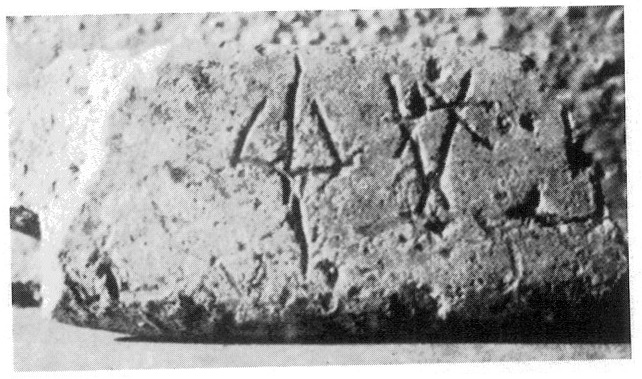
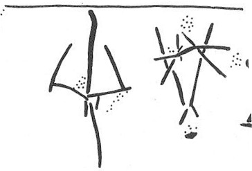

-
THEZb1
Names
Aliases for the inscription.
THEZb1, TEZ1, THE Zb 1
Support
Type of Object.
Clay vessel
Location
Site where object was found.
Thera
Findspot
Location at Site.
Unavailable


# "Row Index", "Line Index", "Word Index", "Syllabogram", "Status of Reading"
# R L W I S
# 1 0 1 PA certain
1 1 0 SI none
1 1 0 NI none
Scribe
Writer of Inscription.
Unavailable
Context
Approximate Date of Inscription.
Unavailable
Dimensions
Height x Length x Thickness.
Catalogue
Museum Reference Number.
Readings
Linear A Transcription
A Linear A transcription with words parsed separately.
Line breaks match the inscription.
𐘤𐘝
ASCII Transcription
An ASCII transcription with words parsed separately.
Line breaks match the inscription.
SINI
Linear A Tabulation
A Linear A transcription with words parsed separately.
Line breaks are logical, e.g. to represent a list.
𐘤𐘝
ASCII Tabulation
An ASCII transcription with words parsed separately.
Line breaks are logical, e.g. to represent a list.
SINI
Commentaries
THE Zb 1
(Thera Mus. AKR P7.633;
72ppi image
,
300ppi image
) (GORILA IV:
101), pithos rim
sherd (Potamos, a site 600 m to the east of Akrotiri,
near Kamara,
presumably LM IA; excavated in 1899; cf. Evans, SM I: 34; PM
I 567, 637;
PM IV: 715; inscription made prior to firing)
] SI-NI-[
SI-NI-
KU
[ possible.
Commentary © John Younger
References
papers/GORILA-Vol4.pdf#page=143